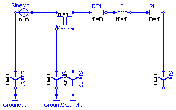
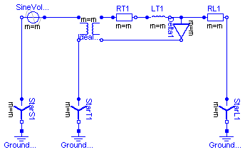
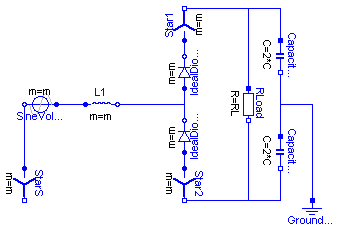

This package contains test examples of analog electrical multiphase circuits.
| Name | Description |
|---|---|
| Test example with multiphase components | |
| Test example with multiphase components | |
| Test example with multiphase components |
 Modelica.Electrical.MultiPhase.Examples.TransformerYY
Modelica.Electrical.MultiPhase.Examples.TransformerYY
Test example with multiphase components:
Star-connected voltage source feeds via a Y-Y-transformer with internal impedance (RT, LT) a load resistor RT.
Using f=5 Hz LT=3mH defines nominal voltage drop of approximately 10 %.
Simulate for 1 second (2 periods) and compare voltages and currents of source, transformer and load.
| Type | Name | Default | Description |
|---|---|---|---|
| m | 3 | Number of phases | |
| V | 1 | Amplitude of Star-Voltage [V] | |
| f | 5 | Frequency [Hz] | |
| LT | 0.003 | Transformer stray inductance [H] | |
| RT | 0.05 | Transformer resistance [Ohm] | |
| RL | 1 | Load Resistance [Ohm] |
model TransformerYY "Test example with multiphase components"
extends Modelica.Icons.Example;
parameter Integer m=3 "Number of phases";
parameter Modelica.SIunits.Voltage V=1 "Amplitude of Star-Voltage";
parameter Modelica.SIunits.Frequency f=5 "Frequency";
parameter Modelica.SIunits.Inductance LT=0.003 "Transformer stray inductance";
parameter Modelica.SIunits.Resistance RT=0.05 "Transformer resistance";
parameter Modelica.SIunits.Resistance RL=1 "Load Resistance";
Sources.SineVoltage SineVoltage1(
V=fill(V, m),
freqHz=fill(f, m),
m=m);
Basic.Star StarS1(m=m);
Modelica.Electrical.Analog.Basic.Ground GroundS1;
Ideal.IdealTransformer IdealTransformer1(m=m);
Basic.Star StarT1(m=m);
Basic.Star StarT2(m=m);
Modelica.Electrical.Analog.Basic.Ground GroundT2;
Basic.Resistor RT1(m=m, R=fill(RT, m));
Basic.Inductor LT1(m=m, L=fill(LT, m));
Basic.Resistor RL1(m=m, R=fill(RL, m));
Basic.Star StarL1(m=m);
Modelica.Electrical.Analog.Basic.Ground GroundT1;
equation
connect(StarS1.pin_n, GroundS1.p);
connect(StarT1.pin_n, GroundT1.p);
connect(StarT2.pin_n, GroundT2.p);
connect(StarS1.plug_p, SineVoltage1.plug_n);
connect(SineVoltage1.plug_p, IdealTransformer1.plug_p1);
connect(IdealTransformer1.plug_n1, StarT1.plug_p);
connect(StarT2.plug_p, IdealTransformer1.plug_n2);
connect(IdealTransformer1.plug_p2, RT1.plug_p);
connect(RT1.plug_n, LT1.plug_p);
connect(LT1.plug_n, RL1.plug_p);
connect(RL1.plug_n, StarL1.plug_p);
end TransformerYY;
Modelica.Electrical.MultiPhase.Examples.TransformerYD
Test example with multiphase components:
Star-connected voltage source feeds via a Y-D-transformer with internal impedance (RT, LT) a load resistor RT.
Using f=5 Hz LT=3mH defines nominal voltage drop of approximately 10 %.
Simulate for 1 second (2 periods) and compare voltages and currents of source, transformer and load.
| Type | Name | Default | Description |
|---|---|---|---|
| m | 3 | Number of phases | |
| V | 1 | Amplitude of Star-Voltage [V] | |
| f | 5 | Frequency [Hz] | |
| LT | 0.003 | Transformer stray inductance [H] | |
| RT | 0.05 | Transformer resistance [Ohm] | |
| RL | 1 | Load Resistance [Ohm] | |
| nT | 1/sqrt((1 - Modelica.Math.co... | Transformer ratio |
model TransformerYD "Test example with multiphase components"
extends Modelica.Icons.Example;
parameter Integer m=3 "Number of phases";
parameter Modelica.SIunits.Voltage V=1 "Amplitude of Star-Voltage";
parameter Modelica.SIunits.Frequency f=5 "Frequency";
parameter Modelica.SIunits.Inductance LT=0.003 "Transformer stray inductance";
parameter Modelica.SIunits.Resistance RT=0.05 "Transformer resistance";
parameter Modelica.SIunits.Resistance RL=1 "Load Resistance";
parameter Real nT=1/sqrt((1 - Modelica.Math.cos(2*Modelica.Constants.pi/m))
^2 + (Modelica.Math.sin(2*Modelica.Constants.pi/m))^2)
"Transformer ratio";
Sources.SineVoltage SineVoltage1(
V=fill(V, m),
freqHz=fill(f, m),
m=m);
Basic.Star StarS1(m=m);
Modelica.Electrical.Analog.Basic.Ground GroundS1;
Ideal.IdealTransformer IdealTransformer1(m=m, n=fill(nT, m));
Basic.Star StarT1(m=m);
Basic.Delta Delta1(m=m);
Modelica.Electrical.Analog.Basic.Ground GroundT1;
Basic.Resistor RT1(m=m, R=fill(RT/nT^2, m));
Basic.Inductor LT1(m=m, L=fill(LT/nT^2, m));
Basic.Resistor RL1(m=m, R=fill(RL, m));
Basic.Star StarL1(m=m);
Modelica.Electrical.Analog.Basic.Ground GroundL1;
equation
connect(GroundS1.p, StarS1.pin_n);
connect(GroundT1.p, StarT1.pin_n);
connect(StarS1.plug_p, SineVoltage1.plug_n);
connect(SineVoltage1.plug_p, IdealTransformer1.plug_p1);
connect(IdealTransformer1.plug_n1, StarT1.plug_p);
connect(IdealTransformer1.plug_p2, RT1.plug_p);
connect(RT1.plug_n, LT1.plug_p);
connect(LT1.plug_n, Delta1.plug_p);
connect(Delta1.plug_n, IdealTransformer1.plug_n2);
connect(Delta1.plug_p, RL1.plug_p);
connect(RL1.plug_n, StarL1.plug_p);
connect(StarL1.pin_n, GroundL1.p);
end TransformerYD;
Modelica.Electrical.MultiPhase.Examples.Rectifier
Test example with multiphase components:
Star-connected voltage source feeds via a line reactor a diode bridge rectifier with a DC burden.
Using f=5 Hz, simulate for 1 second (2 periods) and compare voltages and currents of source and DC burden,
neglecting initial transient.
| Type | Name | Default | Description |
|---|---|---|---|
| m | 3 | Number of phases | |
| V | 1 | Amplitude of Star-Voltage [V] | |
| f | 5 | Frequency [Hz] | |
| L | 0.001 | Line Inductance [H] | |
| RL | 2 | Load Resistance [Ohm] | |
| C | 0.05 | Total DC-Capacitance [F] | |
| RE | 1E6 | Earthing Resistance [Ohm] |
model Rectifier "Test example with multiphase components"
extends Modelica.Icons.Example;
parameter Integer m=3 "Number of phases";
parameter Modelica.SIunits.Voltage V=1 "Amplitude of Star-Voltage";
parameter Modelica.SIunits.Frequency f=5 "Frequency";
parameter Modelica.SIunits.Inductance L=0.001 "Line Inductance";
parameter Modelica.SIunits.Resistance RL=2 "Load Resistance";
parameter Modelica.SIunits.Capacitance C=0.05 "Total DC-Capacitance";
parameter Modelica.SIunits.Resistance RE=1E6 "Earthing Resistance";
Sources.SineVoltage SineVoltage1(
m=m,
V=fill(V, m),
freqHz=fill(f, m));
Basic.Star StarS(m=m);
Basic.Inductor L1(m=m, L=fill(L, m));
Ideal.IdealDiode IdealDiode1(m=m);
Basic.Star Star1(m=m);
Ideal.IdealDiode IdealDiode2(m=m);
Basic.Star Star2(m=m);
Modelica.Electrical.Analog.Basic.Resistor RLoad(R=RL);
Modelica.Electrical.Analog.Basic.Capacitor Capacitor1(C=2*C);
Modelica.Electrical.Analog.Basic.Capacitor Capacitor2(C=2*C);
Modelica.Electrical.Analog.Basic.Ground GroundDC;
equation
connect(Capacitor1.n, Capacitor2.p);
connect(Capacitor1.n, GroundDC.p);
connect(StarS.plug_p, SineVoltage1.plug_n);
connect(SineVoltage1.plug_p, L1.plug_p);
connect(IdealDiode1.plug_p, L1.plug_n);
connect(IdealDiode2.plug_n, L1.plug_n);
connect(IdealDiode1.plug_n, Star1.plug_p);
connect(IdealDiode2.plug_p, Star2.plug_p);
connect(Star2.pin_n, RLoad.n);
connect(Star2.pin_n, Capacitor2.n);
connect(Star1.pin_n, RLoad.p);
connect(Star1.pin_n, Capacitor1.p);
end Rectifier;